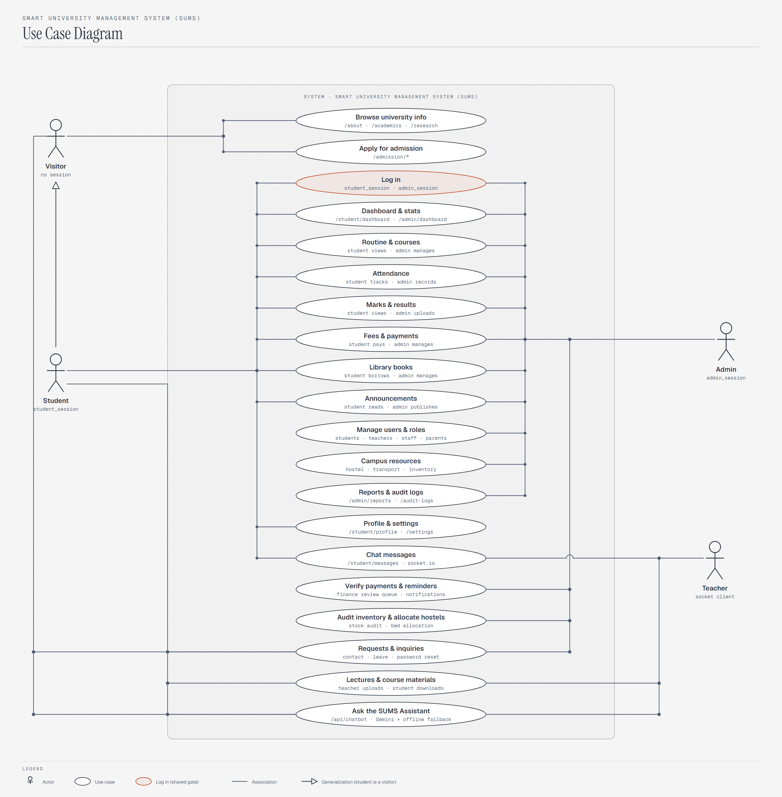
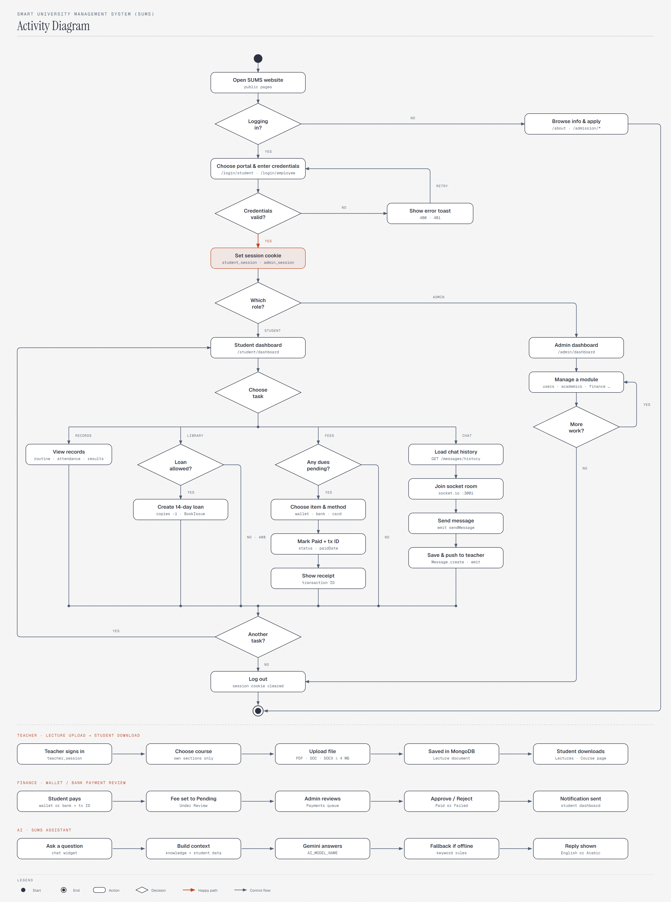
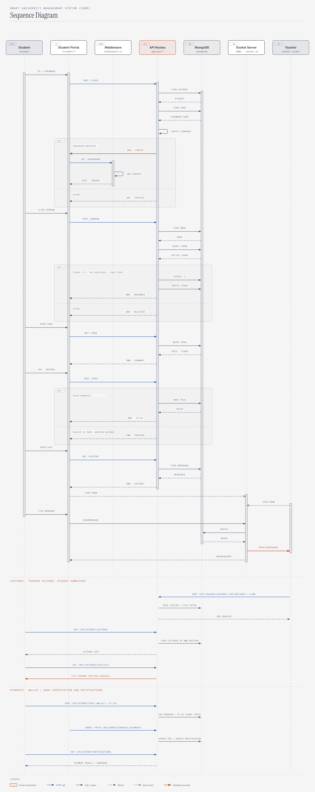
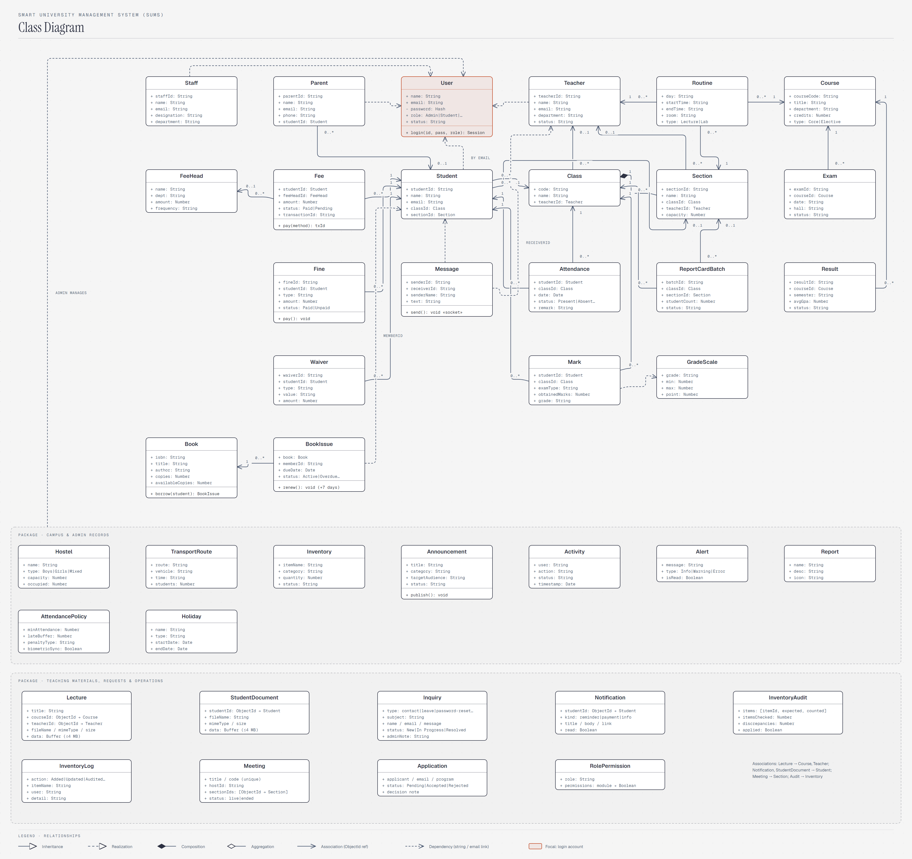

SMART UNIVERSITY MANAGEMENT SYSTEM · UML
شرح دياجرامات SUMS
SUMS نظام لإدارة الجامعة مبني بـ Next.js و MongoDB. الصفحة دي بتشرح الأربع دياجرامات اللي بتوصف النظام: إزاي تقرا كل واحد، وكل جزء فيه معناه إيه، والحاجات اللي ممكن تتسأل عليها في المناقشة.
ترتيب القراية الطبيعي: الـ Use Case بيقولك إيه اللي النظام بيعمله. الـ Activity بيقولك بأي ترتيب. الـ Sequence بيقولك مين بيكلم مين جوه السيرفر. والـ Class بيقولك البيانات متخزنة إزاي.
01
Use Case Diagram
بيوضح مين اللي بيتعامل مع النظام (الـ actors) وكل واحد يقدر يعمل إيه (الـ use cases). مابيوضحش التفاصيل الداخلية ولا الترتيب.

إزاي تقراه
- الراجل (stick figure)
- Actor: حد أو حاجة من برة النظام بتتعامل معاه.
- الشكل البيضاوي
- Use case: خدمة واحدة النظام بيقدمها. تحت الاسم مكتوب الـ route أو دور كل actor فيها.
- المستطيل الكبير
- System boundary: حدود النظام. اللي جواه هو SUMS، واللي برّه هم الـ actors.
- خط عادي
- Association: الـ actor ده بيستخدم الـ use case ده.
- سهم بمثلث فاضي
- Generalization: الطالب نوع من الزائر، فيقدر يعمل كل اللي الزائر بيعمله وزيادة.
- البيضاوي الملوّن
- Log in: البوابة المشتركة اللي لازم الطالب والأدمن يعدّوا منها.
الـ Actors
- Visitor: أي حد فاتح الموقع من غير ما يسجّل دخول. بيتصفح معلومات الجامعة وصفحات القبول.
- Student: طالب سجّل دخول، ومعاه cookie اسمها
student_session. - Admin: مسؤول سجّل دخول من
/login/employee، ومعاهadmin_session. - Teacher: actor ثانوي، بيظهر في الشات بس. هو مستخدم على الـ socket بيستقبل رسايل الطالب.
الـ Use cases
- اتنين للزائر: تصفح معلومات الجامعة، والتقديم للقبول.
- Log in: مشترك بين الطالب والأدمن.
- سبعة مشتركين: Dashboard، والجدول والكورسات، والحضور، والدرجات، والمصاريف، والمكتبة، والإعلانات. نفس البيانات بيشوفها الطالب وبيديرها الأدمن. مثلاً في المصاريف الطالب بيدفع والأدمن بيدير.
- تلاتة للأدمن بس: إدارة المستخدمين والأدوار، وموارد الحرم (سكن ومواصلات ومخزن)، والتقارير والـ audit logs.
- اتنين للطالب بس: البروفايل والإعدادات، والشات مع المدرّس.
/admission/apply موجود في الواجهة، لكن مش بيبعت بياناته لأي API، يعني البيانات لسه مش بتتحفظ.02
Activity Diagram
بيمشي مع المستخدم من أول ما يفتح الموقع لحد ما يخرج. بيوضح كل خطوة وكل قرار بالترتيب، ومسار الزائر والطالب والأدمن كلهم بيبدأوا من نفس النقطة وبيخلصوا عند نفس النهاية.

إزاي تقراه
- دايرة مليانة
- Start: بداية النشاط.
- دايرة جوّه دايرة
- End: نهاية النشاط.
- مستطيل حوافه مدوّرة
- Action: خطوة بيعملها المستخدم أو النظام.
- المعيّن
- Decision: سؤال، وكل خط خارج منه مكتوب عليه الإجابة (YES أو NO أو اسم الدور).
- النقط على الخط الأفقي
- Merge: المسارات المختلفة بترجع تتقابل في مسار واحد.
- السهم البرتقالي
- Happy path: المسار الناجح لتسجيل الدخول.
المسار خطوة بخطوة
- فتح الموقع: لو المستخدم مش هيسجّل دخول، يبقى زائر. بيتصفح ويقدّم، وبعدين يروح على الـ End.
- تسجيل الدخول: بيختار البوابة ويدخّل بياناته. لو البيانات غلط، بتظهر رسالة خطأ (400 أو 401) ويرجع يحاول تاني.
- Set session cookie: لو البيانات صح، السيرفر بيحط cookie مدتها 24 ساعة.
- Which role?: المسار بيتقسم هنا لأدمن وطالب.
- الأدمن: Dashboard، بعدين يدير موديول (مستخدمين، أكاديمي، مالية، إلخ). لو لسه عنده شغل يرجع تاني، ولو خلّص يعمل Log out.
- الطالب: من الـ Dashboard بيختار مهمة من أربع:
- Records: يشوف الجدول والحضور والنتائج.
- Library: السؤال "Loan allowed?" معناه إن معاه أقل من 5 كتب، والكتاب ده مش معاه أصلاً، وفيه نسخة متاحة. لو ينفع، بيتعمل loan لمدة 14 يوم والنسخ المتاحة بتقل واحدة. لو لأ، بيرجع 400.
- Fees: لو عليه مصاريف، بيختار البند وطريقة الدفع (bKash أو Nagad أو كارت). البند بيتعلّم Paid وبيطلع transaction ID، وبعدين يشوف الإيصال.
- Chat: بيحمّل الرسايل القديمة، وبيدخل الـ socket room، ويبعت رسالة. الرسالة بتتحفظ وبتوصل للمدرّس.
- Another task?: لو عايز مهمة تانية بيرجع للـ Dashboard، ولو لأ بيعمل Log out. الـ Logout بيمسح الـ cookie، وبعدها End.
03
Sequence Diagram
بيوضح الرسايل اللي بتتبعت بين أجزاء النظام بترتيبها الزمني. الوقت بيمشي من فوق لتحت، والمثال هو session واحدة متصلة: طالب بيسجّل دخول، وبعدين يستعير كتاب، ويدفع المصاريف، ويكلّم المدرّس.

إزاي تقراه
- المربعات اللي فوق
- Lifelines: الأجزاء المشاركة، والخط المتقطع اللي نازل من كل واحد هو عمره في السيناريو.
- المستطيل الرفيع على الخط
- Activation bar: الجزء ده شغّال في الفترة دي.
- سهم أزرق
- HTTP call: طلب من المتصفح للـ API، زي
POST /login. - سهم رمادي متصل
- Call / query: نداء داخلي أو استعلام على الداتابيز.
- سهم متقطع رأسه مليان
- Return: الرد.
- سهم متقطع رأسه فاضي
- Async emit: رسالة socket مش بتستنى رد، زي
JOIN ROOM. - إطار ALT
- تفرّع: الجزء اللي فوق الخط المتقطع بيحصل لو الشرط اللي بين القوسين اتحقق، واللي تحته في الحالة التانية
[else]. - سهم برتقالي
- أهم نجاح: الـ cookie اتعملت، والرسالة وصلت للمدرّس.
الـ Lifelines السبعة
Student (المستخدم)، Student Portal (صفحات /student/*)، Middleware (middleware.ts)، API Routes (app/api/*)، MongoDB، Socket Server (socket-server.js على port 3001)، Teacher.
المراحل (الأربعة الأساسية + مرحلتين جداد)
1. Login
البوابة بتبعت POST /login. الـ API بيدوّر على الطالب، وبعدين على حساب الـ User بتاعه، ويقارن الباسورد بـ bcrypt.compare. لو الباسورد صح، بيرجع 200 + cookie، والبوابة بتطلب /dashboard، والـ middleware بيتأكد إن الـ cookie موجودة ويسيبه يعدّي. لو غلط، بيرجع 401.
2. Borrow a book
الطالب بيدوس Borrow، فالبوابة بتبعت POST /borrow. الـ API بيجيب الكتاب ويعدّ الكتب اللي مع الطالب. لو الشروط تمام، بينقّص نسخة ويعمل BookIssue ويرجع 200. لو لأ، بيرجع 400.
3. Pay fees
البوابة بتبعت GET /fees عشان تجيب الملخص. بعدين الطالب بيختار طريقة الدفع، وتتبعت POST /fees. لو الدفع بكارت بيتعلّم Paid فورًا ويرجع transaction ID. لو بمحفظة أو تحويل بنكي بيتسجل Pending مع رقم العملية، والأدمن بيراجعه ويوافق أو يرفض، وبعدها الطالب بيوصله إشعار.
4. Real-time chat
الرسايل القديمة بتيجي بـ HTTP. بعدين الطالب والمدرّس بيعملوا join للـ room. لما الطالب يبعت sendMessage، السيرفر بيحفظ الرسالة في MongoDB ويبعتها للمدرّس بـ receiveMessage، ويأكد للطالب بـ messageSent.
5. Lectures
المدرس بيرفع ملف PDF/Word (لحد 4 ميجا) عن طريق POST /api/teacher/lectures والسيرفر بيتأكد إن الكورس تبعه وبيحفظ الملف في MongoDB. الطالب بيفتح GET /api/student/lectures فيشوف محاضرات كورسات سكشنه بس، وبيحمّل الملف من GET /api/lectures/[id]/file بعد فحص الصلاحية.
6. Payment review & notifications
الأدمن بيعمل PATCH /api/admin/financial/payments بالموافقة أو الرفض، فالـ API بيحدّث الـ Fee وبينشئ Notification، والطالب بيشوفها من GET /api/student/notifications (وكمان تذكيرات الرسوم).
/student و /admin)، عشان كده مش ظاهر في طلبات الـ API. وتسجيل دخول الأدمن نفس الفلو بالظبط، لكنه بيدوّر على User دوره Admin وبيحط admin_session.04
Class Diagram
بيوضح كل الـ Mongoose models اللي في models/، وهم 40 class: كل class فيه إيه من بيانات، وإيه علاقته بالتاني.

إزاي تقراه
- المربع
- Class، ومتقسم 3 أجزاء: الاسم، بعدين الـ attributes (
اسم: نوع)، بعدين الـ operations لو موجودة. +و-- Visibility: علامة
+معناها public، وعلامة-معناها private، زيpasswordفي User لأنه hash ومش بيتعرض. - سهم متصل
- Association: فيه
ObjectId refحقيقي في الـ schema، زيFee.studentId → Student. - الأرقام على الأطراف
- Multiplicity:
1معناها واحد بالظبط، و0..1معناها ممكن يكون موجود أو لأ، و0..*معناها أي عدد. - معيّن مليان
- Composition: بين Class و Section. الـ Section جزء من Class ومالهاش وجود من غيره.
- سهم متقطع
- Dependency: ربط مش
ObjectId، لكنه موجود في الكود، زي الربط بالإيميل أو بـ string id. - الإطار المتقطع تحت
- Package: مجموعة classes بيديرها الأدمن، ومش مربوطة بالطالب مباشرة.
- المربع الملوّن
- User: الحساب اللي بيتم بيه تسجيل الدخول.
التقسيم
- فوق (الحسابات): User و Staff و Parent و Teacher. البيانات الشخصية في Student و Teacher وغيرهم، لكن الباسورد والـ role في User، والربط بينهم بالإيميل.
- في النص: Student، لأن أغلب البيانات مربوطة بيه.
- شمال (المالية والمكتبة): Fee مربوط بـ FeeHead (نوع المصروف)، و Fine و Waiver. و BookIssue بيربط Book بالطالب عن طريق
memberId. - يمين (الأكاديمي): Class فيه Sections. و Routine بيربط Course و Section و Teacher. و Exam و Result مربوطين بـ Course. و Attendance و Mark مربوطين بـ Student و Class. و Mark بيرجع لـ GradeScale عشان يحسب التقدير.
- تحت (Campus & Admin Records): Hostel و TransportRoute و Inventory و Announcement و Activity و Alert و Report و AttendancePolicy و Holiday. الأدمن بيديرهم كلهم.
- أسفل (Teaching Materials, Requests & Operations): Lecture (ملفات المحاضرات مربوطة بـ Course و Teacher) و StudentDocument و Notification (مربوطين بـ Student) و Inquiry (الطلبات والاستفسارات) و InventoryAudit و InventoryLog و Meeting (الفصول الأونلاين مربوطة بـ Section) و Application (طلبات التقديم) و RolePermission (صلاحيات الأدوار).
Fee.pay() و Book.borrow() و BookIssue.renew() و User.login() مش methods جوّه الـ Mongoose models. هي السلوك اللي بتنفّذه الـ API routes على البيانات دي، وحطيتها عشان الدياجرام يوضّح إن البيانات دي بيتعمل عليها إيه.05
أسئلة متوقعة في المناقشة
ليه User منفصل عن Student؟
عشان بيانات الدخول (الباسورد المتشفّر والـ role) تبقى في مكان واحد لكل الأدوار. بيانات الطالب الأكاديمية والشخصية في Student. وقت الـ login، الـ API بيدوّر على Student بالـ ID أو الإيميل، وبعدين يجيب الـ User اللي ليه نفس الإيميل ويقارن الباسورد.
إيه الفرق بين السهم المتصل والمتقطع في الـ Class Diagram؟
السهم المتصل معناه إن فيه field نوعه ObjectId بـ ref للـ model التاني، يعني علاقة صريحة في الـ schema. أما المتقطع فمعناه إن الربط موجود في الكود لكنه بـ string أو بالإيميل، زي BookIssue.memberId و Message.receiverId.
ليه Class و Section composition مش association؟
لأن classId في Section إجباري (required). الـ Section مالهاش معنى من غير الـ Class اللي هي جزء منه، فلو اتمسح الـ Class، الـ Sections بتاعته ملهاش لازمة.
المدرّس actor إزاي، وهو مالوش بوابة؟
المدرّس بيظهر في الشات. صفحة الرسايل بتجيب لستة المدرّسين من /api/student/messages/contacts، والرسايل بتوصله عن طريق الـ socket server. عشان كده هو actor ثانوي، متوصّل بـ use case الشات بس.
الـ session بتشتغل إزاي؟
بعد ما الباسورد يطلع صح، السيرفر بيحط cookie، يا student_session يا admin_session، مدتها 24 ساعة. الـ middleware.ts بيتأكد منها قبل أي صفحة تحت /student أو /admin، ولو مش موجودة بيحوّل على صفحة الـ login. والـ Logout بيمسح الـ cookie.
ليه الشات على سيرفر منفصل؟
لأن الشات real-time ومحتاج اتصال مفتوح (WebSocket) طول الوقت. الـ API routes في Next.js بتشتغل request ورد وخلاص. عشان كده socket-server.js شغّال لوحده على port 3001 بـ socket.io، وبيحفظ الرسايل في نفس الـ MongoDB.
إيه اللي بيمنع الطالب يستعير كتب كتير؟
الـ API بيعمل 3 checks قبل ما يكتب أي حاجة في الداتابيز: لازم يكون معاه أقل من 5 كتب Active أو Overdue، ومايكونش الكتاب ده معاه أصلاً، ويكون فيه نسخة متاحة. لو أي شرط فشل، بيرجع 400 بالسبب. ده السؤال "Loan allowed?" في الـ Activity، والـ ALT التاني في الـ Sequence.